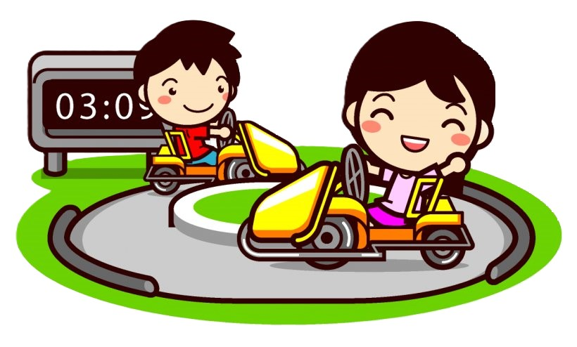
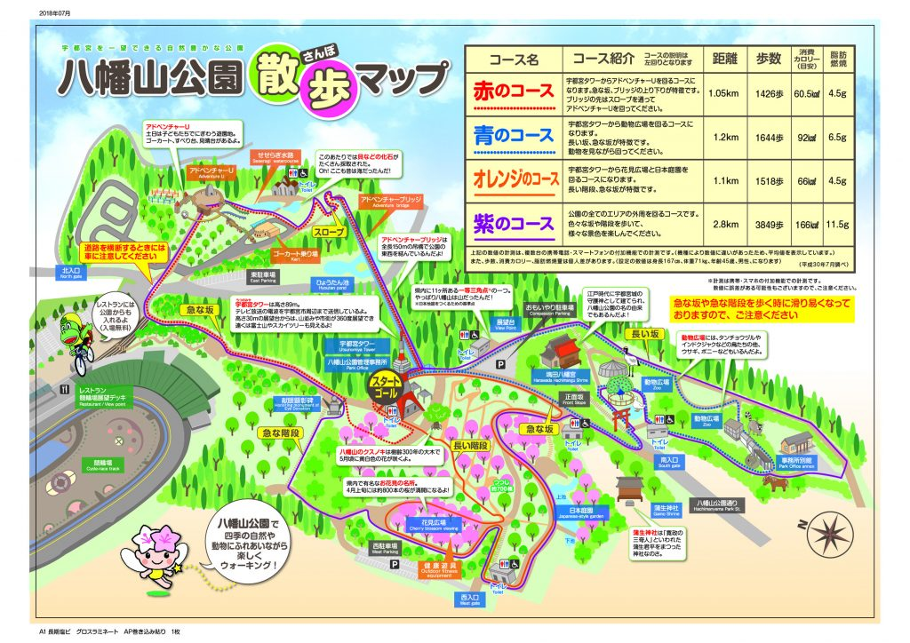
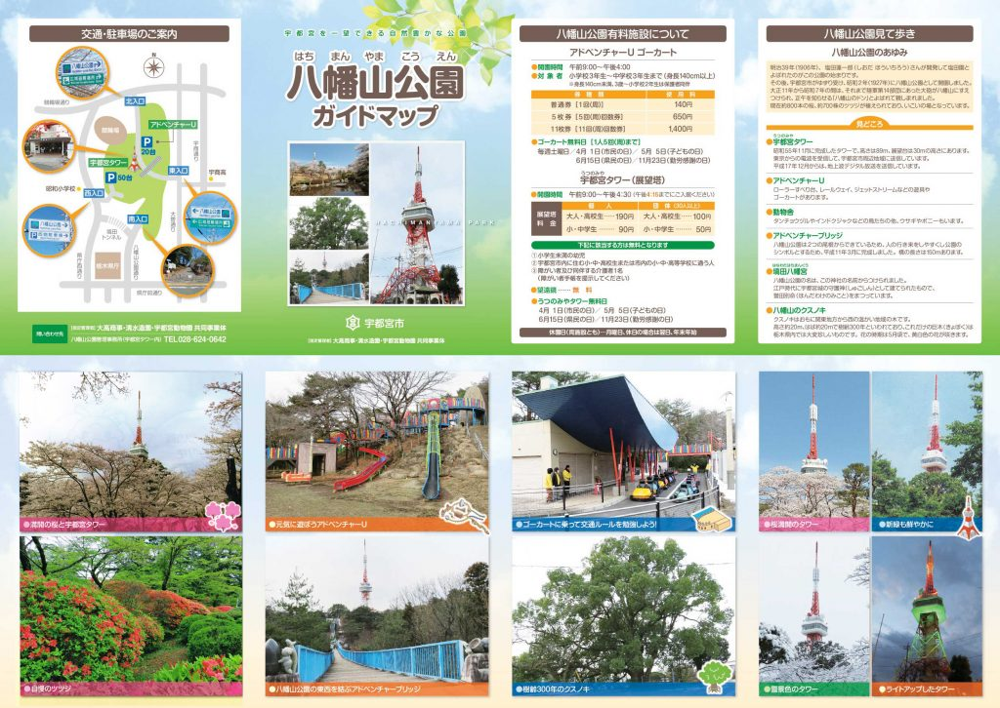

遊び方
八幡山公園（はちまんやまこうえん）には、大きな公園や家族で楽しめる動物園！宇都宮市を一望できる宇都宮タワー！
さらに小さなお子様も楽しめるゴーカートがあります！
八幡山公園

ゴーカート
ゴーカートは３さい～中学３年生までのお子様を対象にお楽しみいただける乗り物となっています。
（※）身長140cm未満と３さい～小学２年生のお子様は保護者と一緒にご利用してください。
動物園
八幡山公園 散歩マップ

八幡山公園 ガイドマップ
